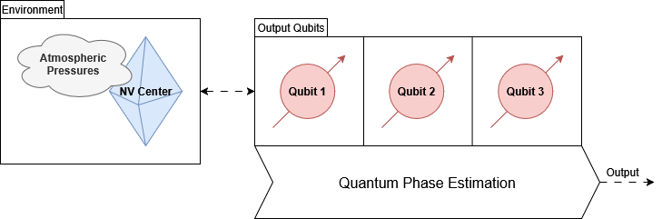

Challenge 2: The World of Quantum Sensing
In a successful smart city, there would need to be many sensors to collect data on the resources, vehicles, and buildings in the city. Sensors might include electromagnetic sensors to accurately track traffic flow, temperature sensors to ensure energy efficient climate control, and pressure sensors to improve weather predictions. A surprising fact is that through the power of quantum mechanics, we can use artificial diamonds as highly accurate sensors for electromagnetic fields, temperature, and pressure, among many other things. While this might sounds like magic, this is simply one of the many quantum sensing devices that exist today.
Most quantum sensors are devices that use qubits to detect very small changes in a quantity of interest. An exciting aspect of quantum sensing is that it provides a way for quantum computers to obtain inputs from the real world, just like conventional sensors provide real-world inputs to conventional computers. In this activity, we will consider nitrogen-vacancy (NV) centers in diamonds. We will not worry too much about the physics, but in short, an NV center is a defect in a diamond which can provide us with very stable qubits that are also ideal for sensing small changes in many quantities of interest. Our motivation is the very speculative application of using NV centers to improve weather predictions for smart city management.
The goal of this challenge is to demonstrate an understanding of how quantum sensing works, at a very high level. We will assume that some physicists have taken the liberty of setting up our sensing NV center, so that we can focus on the quantum computing part of the problem. You will learn about phase accumulation and the quantum Fourier transform (QFT), and see how they can be combined to perform quantum phase estimation (QPE). You will then see how quantum phase estimation can be used to extract useful data for our pressure sensor. We will assume that we have a single diamond for sensing and three qubits to store the sensor output as illustrated in the following diagram.
The challenge outline is as follows.

Citations: This challenge is based on a literature review by Scott E. Crawford, Roman A. Shugayev, Hari P. Paudel, Ping Lu, Madhava Syamlal, Paul R. Ohodnicki, Benjamin Chorpening, Randall Gentry, Yuhua Duan in 2021.